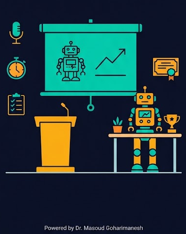
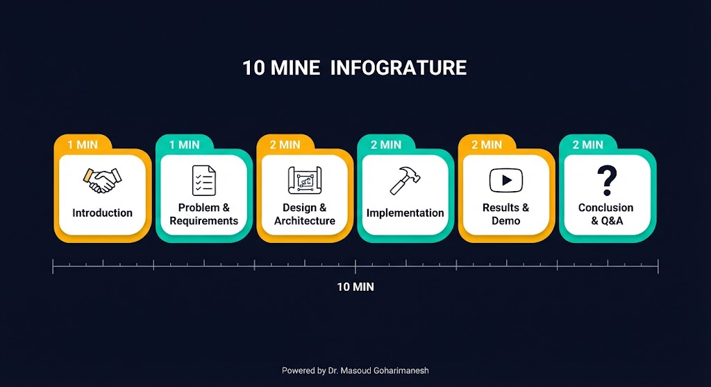
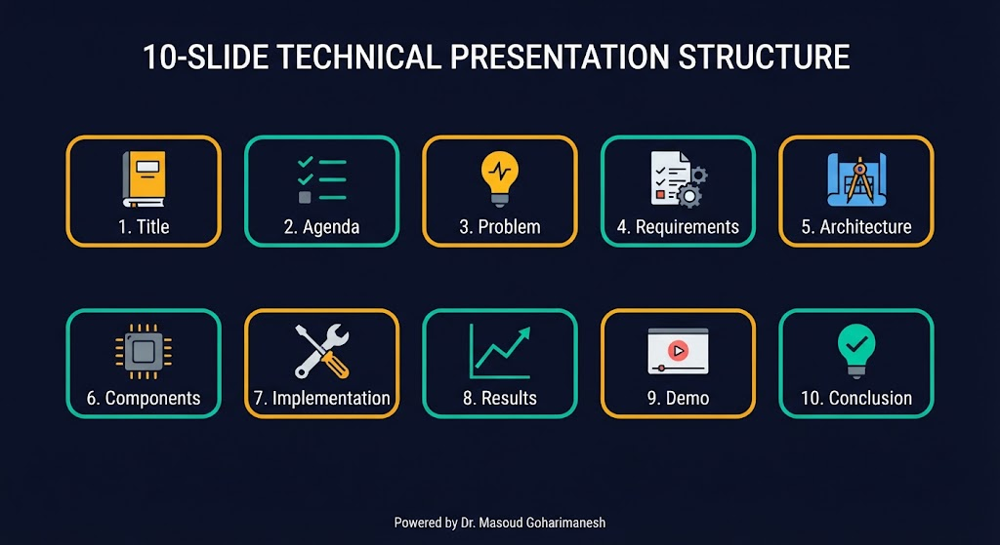
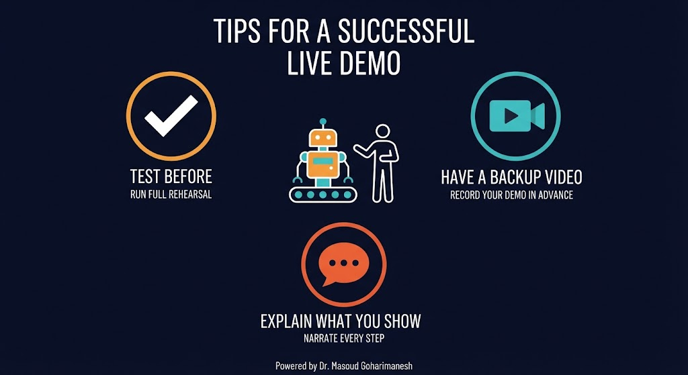
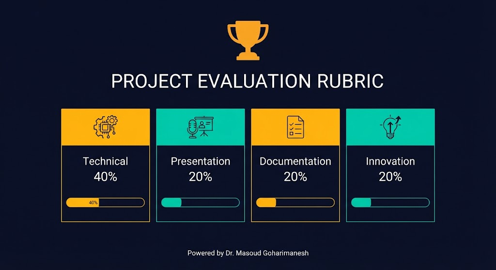
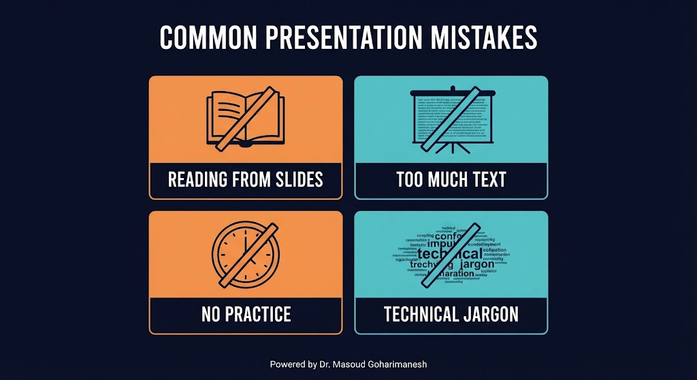
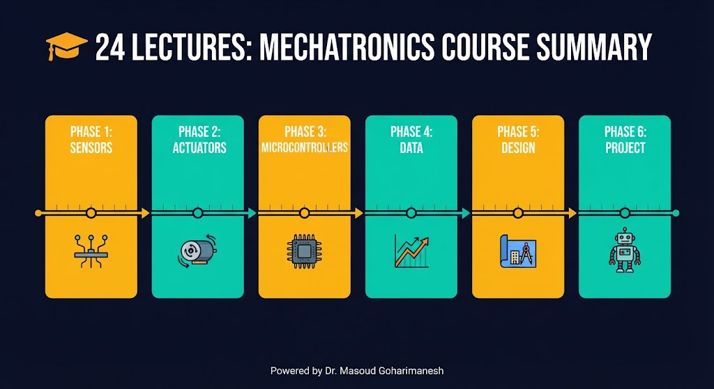
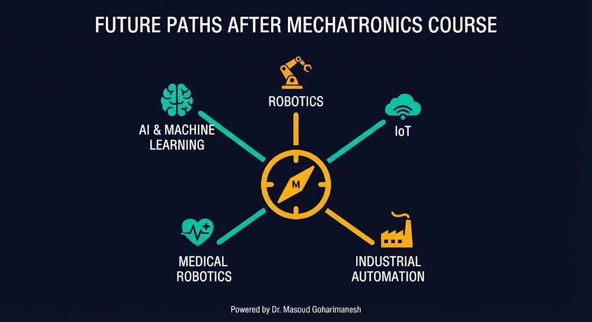

ارائه نتایج، ارزیابی و اختتامیه
دکتر مسعود گوهریمنش
دانشیار گروه مهندسی مکانیک
دانشگاه تربت حیدریه | پاییز ۱۴۰۵
آخرین جلسه — جلسه ۲۴ از ۲۴! 🎉
یک ارائه خوب، میتواند ارزش یک پروژه عالی را دوچندان کند!
اگر فقط ۱۰ دقیقه برای ارائه پروژه خود داشتید، چه چیزهایی را حتماً میگفتید؟
چکلیست قبل از ارائه
مدیریت زمان — کلید موفقیت

۱ دقیقه: مقدمه و معرفی
۱ دقیقه: مسئله و نیازمندیها
۲ دقیقه: طراحی و معماری
۲ دقیقه: پیادهسازی
۲ دقیقه: نتایج و دمو
۲ دقیقه: نتیجهگیری و Q&A
حداکثر ۱۰ اسلاید — کم و گویا

۱. عنوان و معرفی
۲. دستور جلسه
۳. مسئله و هدف
۴. نیازمندیها
۵. معماری سیستم
۶. قطعات و اتصالات
۷. پیادهسازی (کد و سختافزار)
۸. نتایج و نمودارها
۹. دمو (عکس/ویدیو)
۱۰. نتیجهگیری و تشکر
نمایش عملی بدون استرس

در همان محیط ارائه، یک بار دمو بگیرید
اگر دمو زنده کار نکرد، ویدیو نشان دهید
در حین نمایش، عملکرد را توضیح دهید
Q&A — فرصتی برای درخشیدن
مثال: «سوال خوبی است. در پروژه ما از PID استفاده کردیم چون...»
چه چیزهایی ارزشمند است؟

| معیار | وزن | توضیح |
|---|---|---|
| فنی | ۴۰٪ | کارکرد صحیح، دقت، پایداری |
| ارائه | ۲۰٪ | وضوح، مدیریت زمان، Q&A |
| مستندسازی | ۲۰٪ | گزارش، شماتیک، کد |
| نوآوری | ۲۰٪ | ایده خلاقانه، بهبودها |
یادگیری از یکدیگر
نکته: ارزیابی همتایان باید سازنده و محترمانه باشد. هدف، یادگیری متقابل است.
آینهای برای رشد
از اینها دوری کنید

اسلایدها فقط برای حمایت بصری هستند، نه متن کامل.
اسلاید شلوغ، مخاطب را خسته میکند. کم و گویا باشید.
حداقل یک بار ارائه را با تایمر تمرین کنید.
به زبان ساده توضیح دهید. فرض نکنید همه متخصص هستند.
از خوب به عالی
با مخاطبان ارتباط برقرار کنید
حرکات طبیعی، اعتماد به نفس
آهسته و شفاف صحبت کنید
گرما و صمیمیت ایجاد کنید
در ۱۰ دقیقه تمام کنید
رنگبندی، فونت درست، فضای خالی
۲۴ جلسه، ۶ فاز، یک سفر کامل

ارزیابی نهایی پروژه
اسلایدرها را تغییر دهید تا نمره نهایی محاسبه شود.
جلسه بیستوچهارم - ارائه و ارزیابی

تبریک! شما ۲۴ جلسه را با موفقیت گذراندید. 🎉
دکتر مسعود گوهریمنش
دانشیار گروه مهندسی مکانیک
دانشگاه تربت حیدریه | پاییز ۱۴۰۵
موفق باشید و مسیر یادگیری را ادامه دهید!
Powered by Dr. Masoud Goharimanesh